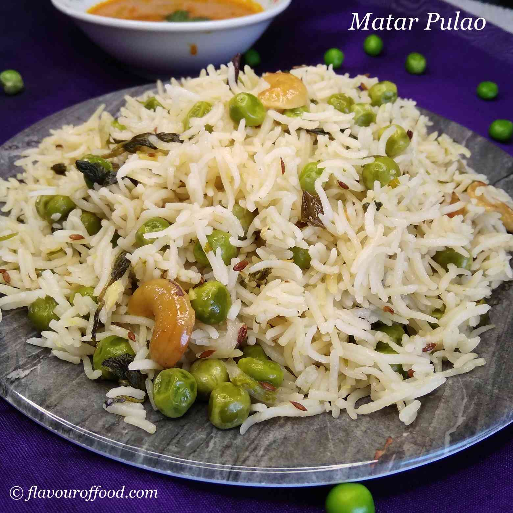

Pulav Recipe

Veg Pulav or vegetable pulav recipe is an easiest and quick recipe made with basmati rice, spices and vegetables of your choice.
Ingredients
- 2 cups Basmati rice
- 2 medium Onions roughly chopped
- 2 Potatoes chopped in cubes
- ¼ cup French beans chopped in cubes
- ¼ cup Carrots chopped in cubes
- 1 bell pepper chopped in cubes
- 1 bowl Cauliflower florets gobi florets
- ¼ cup Green peas fresh or frozen
- 2.5 cups Water
- 2 tbsp Cooking oil
- 1 tsp Jeera/ Cumin seeds
- 1 tsp Rai/ Mustard seeds
- 2 to 3 Green chillies roughly chopped
- 1 tsp Lal mirch powder/ Red chilli powder
- ¼ tsp Haldi/ Turmeric powder
- 1 tsp Kitchen king masala
- 1 tsp Garam masala
- 1 tbsp Lemon juice
- Salt per taste
Steps
Soaking basmati rice for making veg pulao recipe:
- Take 2 cups of long grain basmati rice in a large bowl and rinse it under the running water.
- Soak the rinsed rice for about 15 to 20 mins in water.
- Drain the water and keep the rice aside.
For making veg pulao recipe:
- Heat 2 to 3 tbsp oil in the pressure cooker and add rai and jeera. Saute till it splutters and cumin turns brown.
- Add chopped onions and saute on medium flame till it turns translucent and golden brown in colour.
- Now add veggies of your choice. Here I am using potatoes, carrots, bell peppers, and french beans. Mix all the ingredients nicely.
- Then, add cauliflower florets and green peas. GIve a nice mix.
- Cover and cook for 4 to 5 minutes till the veggies are partially cooked and softened.
- Now, add dry spices - red chilli powder, haldi, kitchen king masala and garam masala. Also, add salt as per taste.
- Mix the spices and vegetables together and add 3 to 4 tbsp of water.
- After 2 to 3 minutes, add soaked and drained rice along with 2.5 cups of water.
- Add a tbsp of lemon juice and mix it nicely.
- Cover the pressure cooker with the lid and whistle on. Cook for 1 or 2 whistles and let the pressure settle down by itself.
- Now, open the lid and gently fluff the rice with the help of a fork, without breaking it.
- Sprinkle the chopped coriander leaves and again close the lid for few minutes.
- Serve the hot and spicy vegetable pulao with raita or curd.